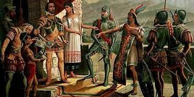

Conquista y Colonia
La conquista de México fue un acontecimiento crucial que comenzó en 1519 y culminó en 1521. Hernán Cortés, en representación de la corona de Castilla, lideró la expedición que resultó en la subyugación del pueblo mexica. A través de negociaciones, alianzas militares y violencia, los españoles y sus aliados indígenas vencieron al Imperio azteca y establecieron el virreinato de Nueva España. Este período colonial, que duró hasta la independencia de México en 1821, transformó la sociedad, la economía y la cultura.
Durante la época colonial, la población indígena disminuyó debido a enfermedades y conflictos. Los blancos peninsulares (españoles nacidos en Europa) gobernaban, pero surgieron nuevas clases sociales, como los criollos (descendientes de españoles nacidos en América).
Independencia de México

El 16 de septiembre de 1810 estalló una revolución social de la cual nacería nuestro país como una Nación independiente, libre y soberana. El 27 de septiembre de 1821 culminó la Independencia de México, después de una guerra de once años que fue una gran revolución popular para librarse del dominio español.